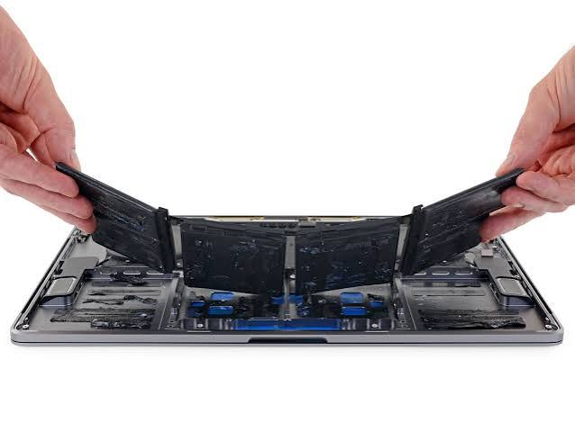
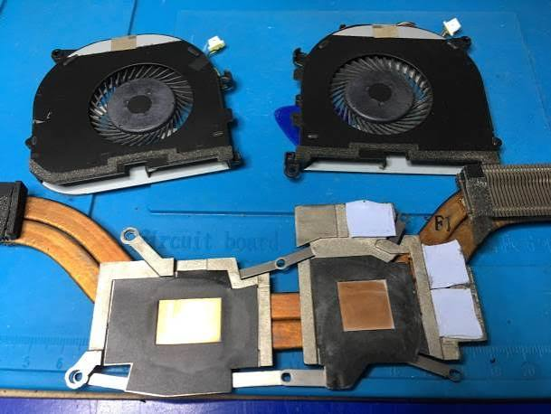
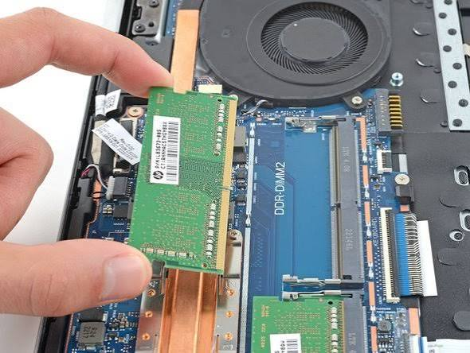
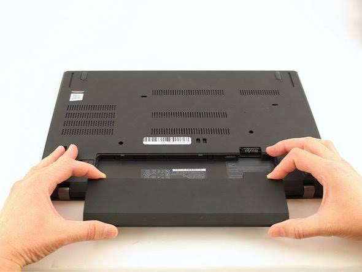
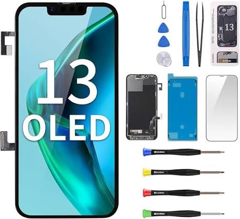
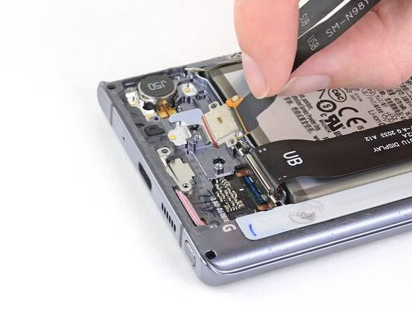
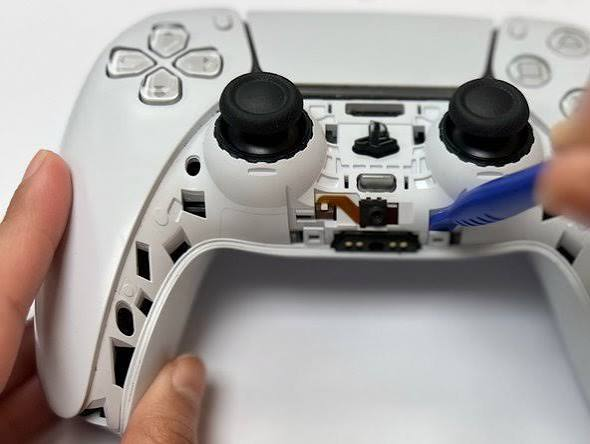
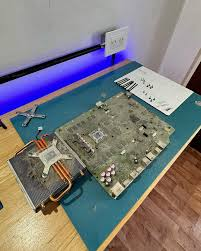

Reemplazo de batería
⏱ 45 min • 🔧 6 herr. • 📄 12 pasos
Aprende a diagnosticar, reparar y extender la vida útil de tus dispositivos electrónicos.

⏱ 45 min • 🔧 6 herr. • 📄 12 pasos

⏱ 30 min • 🔧 4 herr. • 📄 8 pasos

⏱ 15 min • 🔧 2 herr. • 📄 5 pasos

⏱ 40 min • 🔧 3 herr. • 📄 10 pasos

⏱ 60 min • 🔧 8 herr. • 📄 18 pasos

⏱ 50 min • 🔧 5 herr. • 📄 14 pasos

⏱ 35 min • 🔧 4 herr. • 📄 10 pasos

⏱ 45 min • 🔧 5 herr. • 📄 12 pasos